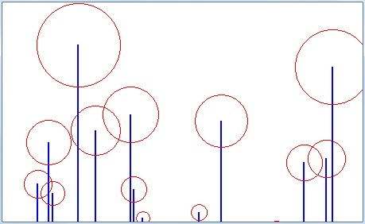
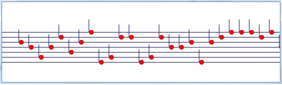

Laborator recapitulare semestrul I
Afisati primele 93 numere naturale intr-un tabel cu 7 coloane. Alinierea numerelor se face la stanga
Afisati primele numere naturale sub forma unui tabel cu 7 coloane si 20 de randuri. Alinierea numerelor se va face la stanga.
Afisati primele numere naturale sub forma unui tabel cu 7 coloane si 20 de randuri. Alinierea numerelor se va face la dreapta.
Se cere un numar dupa care se testeza daca este un numar prim.
Afisati toate numerele prime intre 1 si 100
Afisati primele 100 de numerele prime intr-un tabel cu 10 coloane
Afisati numerele de la 0-25 pe diagonala principala a ecranului
Afisati numerele de la 0-25 pe diagonala secundara a ecranului
Afisati numerele de la 0-25 pe diagonala principala a ecranului si in acelasi timp pe diagonala secundara
Metoda II sub forma de V
Metoda II sub forma de X
Grafica
Folosind numere aleatoare si instructiuni repetitive, trasati figura de jos:

Folosind numere aleatoare si instructiuni repetitive si functii, trasati figura de jos:
